01 Project Overview
Problem statement
Timely delivery is one of the biggest drivers of customer satisfaction in e-commerce. Late parcels mean unhappy customers, extra customer-care calls and higher operational costs.
This project frames the problem as a binary classification task: given details about
a shipment, its product and its customer, predict the value of Reached.on.Time_Y.N.
- Predict on-time delivery of shipments
- Compare multiple machine learning models
- Evaluate with metrics suited to an imbalanced target
- Explore hidden structure with unsupervised learning
At a glance
- Task
- Binary classification
- Target
Reached.on.Time_Y.N- Samples
- 10,999 rows × 12 columns
- Split
- 70% train (7,699) / 30% test (3,300), stratified
- Supervised
- Logistic Regression, KNN, Decision Tree, Neural Network (MLP)
- Unsupervised
- K-Means + PCA visualisation
- Stack
- Python · pandas · NumPy · scikit-learn · Matplotlib · Seaborn · Jupyter
02 Dataset
E-commerce Shipping Dataset — 10,999 shipments, no missing values. 4 categorical and 7 numerical input features plus the binary target.
| Feature | Type | Description | Range / Values |
|---|---|---|---|
ID | numeric | Customer / row identifier | 1 – 10,999 |
Warehouse_block | categorical | Warehouse block the product was shipped from | A, B, C, D, F |
Mode_of_Shipment | categorical | How the product was shipped | Ship, Flight, Road |
Customer_care_calls | numeric | Number of calls made about the shipment | 2 – 7 (mean 4.1) |
Customer_rating | numeric | Customer rating of the company | 1 – 5 (mean 3.0) |
Cost_of_the_Product | numeric | Product cost in US dollars | 96 – 310 (mean 210) |
Prior_purchases | numeric | Number of earlier purchases | 2 – 10 (mean 3.6) |
Product_importance | categorical | Importance category of the product | low, medium, high |
Gender | categorical | Customer gender | F, M |
Discount_offered | numeric | Discount on the product (%) | 1 – 65 (median 7) |
Weight_in_gms | numeric | Product weight in grams | 1,001 – 7,846 (mean 3,634) |
Reached.on.Time_Y.N | target | Delivery outcome | 1 = reached on time · 0 = not on time |
Breakdown by category (share of shipments with target = 1)
Mode of shipment
Product importance
Discount offered
Warehouse block
Customer care calls
Gender
Explore the raw data
03 Exploratory Data Analysis
Charts generated in the project notebook. Click any chart to enlarge.
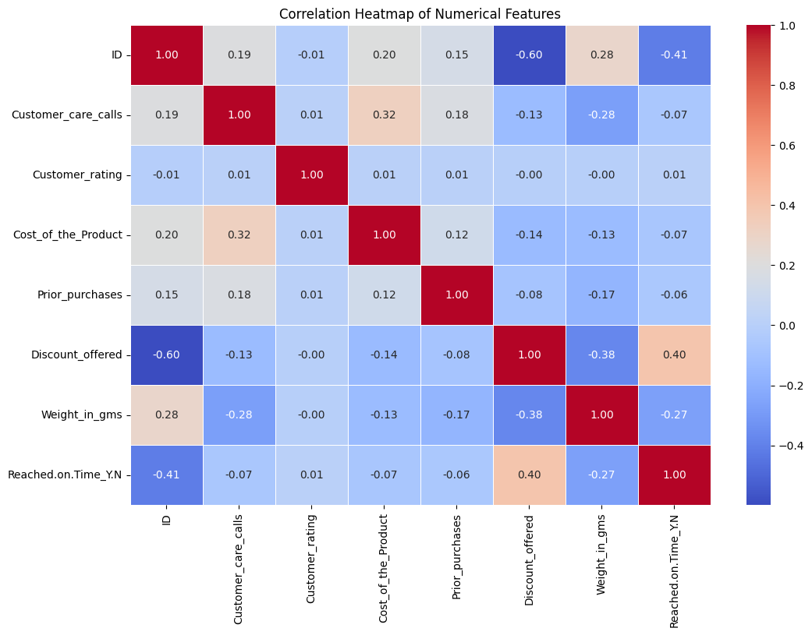
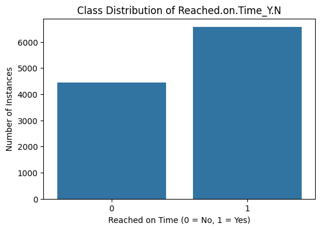
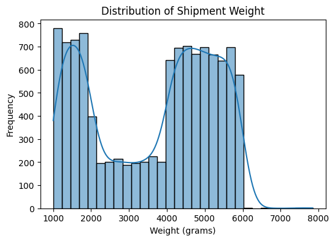
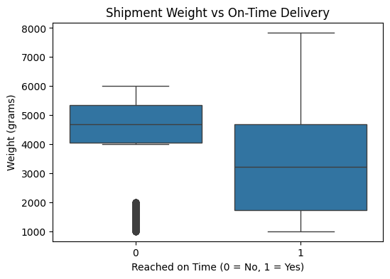
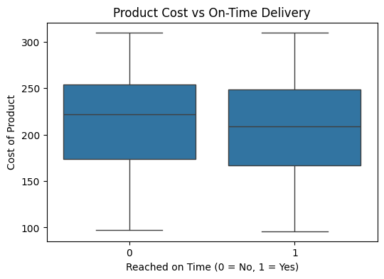
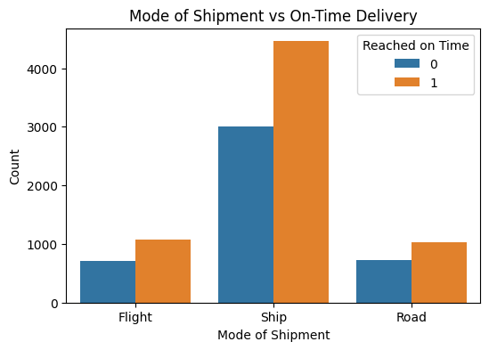
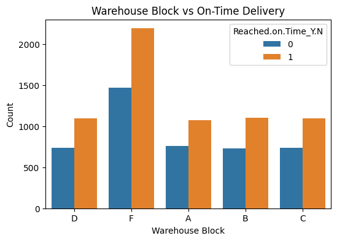
Key insights
Discount_offered correlates +0.40 with the target.Weight_in_gms correlates −0.27 with the target; the two classes have clearly different weight distributions.04 Methodology
- 1
Load & inspect
Load the CSV with pandas; check shape (10,999 × 12), dtypes and feature types.
- 2
EDA
Correlation heatmap, class balance, distributions, box plots and count plots.
- 3
Cleaning
Null check: 0 missing values in every column.
- 4
Encoding
LabelEncoderon Warehouse_block, Mode_of_Shipment, Product_importance and Gender. - 5
Scaling
StandardScaleron all 11 input features. - 6
Split
train_test_split: 70/30,stratify=y,random_state=42. - 7
Train & evaluate
4 classifiers; accuracy, precision, recall, F1, confusion matrix, ROC-AUC.
- 8
Cluster
K-Means (elbow method, k = 2) visualised with 2-component PCA.
Show core training code
X = df_encoded.drop('Reached.on.Time_Y.N', axis=1)
y = df_encoded['Reached.on.Time_Y.N']
X_scaled = StandardScaler().fit_transform(X)
X_train, X_test, y_train, y_test = train_test_split(
X_scaled, y, test_size=0.30, random_state=42, stratify=y)
models = {
"Logistic Regression": LogisticRegression(max_iter=1000, random_state=42),
"KNN": KNeighborsClassifier(n_neighbors=5),
"Decision Tree": DecisionTreeClassifier(criterion='gini', max_depth=10, random_state=42),
"Neural Network": MLPClassifier(hidden_layer_sizes=(64, 32), activation='relu',
solver='adam', max_iter=300, random_state=42),
}05 Model-by-Model Report
LogisticRegression(max_iter=1000, random_state=42)
Classification report
| Prec. | Recall | F1 | Support | |
|---|---|---|---|---|
| 0 | 0.57 | 0.64 | 0.60 | 1331 |
| 1 | 0.74 | 0.68 | 0.71 | 1969 |
| macro | 0.65 | 0.66 | 0.65 | 3300 |
| weighted | 0.67 | 0.66 | 0.66 | 3300 |
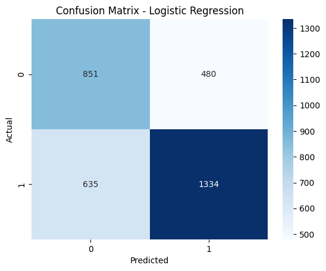
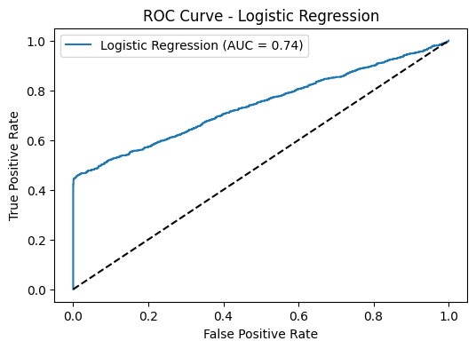
KNeighborsClassifier(n_neighbors=5)
Classification report
| Prec. | Recall | F1 | Support | |
|---|---|---|---|---|
| 0 | 0.57 | 0.62 | 0.59 | 1331 |
| 1 | 0.73 | 0.68 | 0.71 | 1969 |
| macro | 0.65 | 0.65 | 0.65 | 3300 |
| weighted | 0.66 | 0.66 | 0.66 | 3300 |
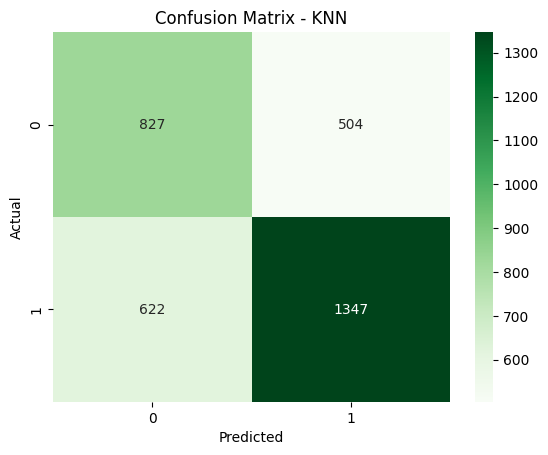
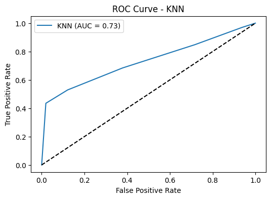
DecisionTreeClassifier(criterion='gini', max_depth=10, random_state=42)
Classification report
| Prec. | Recall | F1 | Support | |
|---|---|---|---|---|
| 0 | 0.56 | 0.84 | 0.68 | 1331 |
| 1 | 0.84 | 0.56 | 0.67 | 1969 |
| macro | 0.70 | 0.70 | 0.67 | 3300 |
| weighted | 0.73 | 0.67 | 0.67 | 3300 |
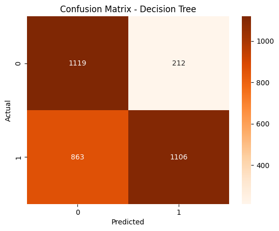
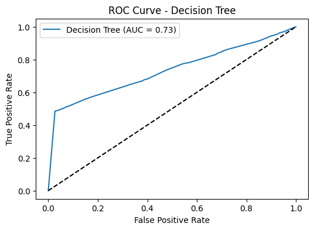
MLPClassifier(hidden_layer_sizes=(64, 32), activation='relu', solver='adam', max_iter=300)
Classification report
| Prec. | Recall | F1 | Support | |
|---|---|---|---|---|
| 0 | 0.56 | 0.66 | 0.61 | 1331 |
| 1 | 0.74 | 0.65 | 0.69 | 1969 |
| macro | 0.65 | 0.66 | 0.65 | 3300 |
| weighted | 0.67 | 0.65 | 0.66 | 3300 |
Note: the optimiser hit the 300-iteration limit before fully converging (ConvergenceWarning).
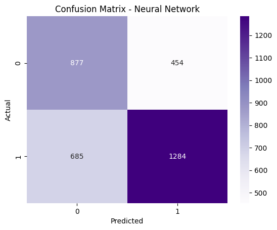
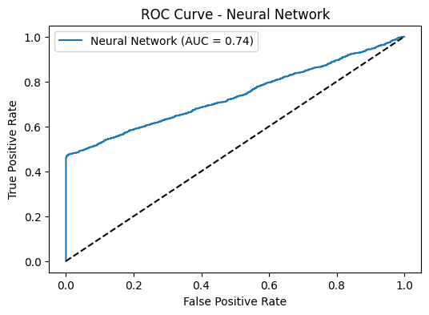
06 Results & Model Comparison
Evaluated on the held-out test set (3,300 shipments). Best value in each column is highlighted.
| Model | Accuracy | Precision (1) | Recall (1) | F1 (1) | Macro F1 | ROC-AUC |
|---|---|---|---|---|---|---|
| Logistic Regression | 0.6621 | 0.7354 | 0.6775 | 0.71 | 0.65 | 0.7411 |
| K-Nearest Neighbors | 0.6588 | 0.7277 | 0.6841 | 0.71 | 0.65 | 0.7306 |
| Decision Tree | 0.6742 | 0.8392 | 0.5617 | 0.67 | 0.67 | 0.7324 |
| Neural Network (MLP) | 0.6548 | 0.7388 | 0.6521 | 0.69 | 0.65 | 0.7370 |
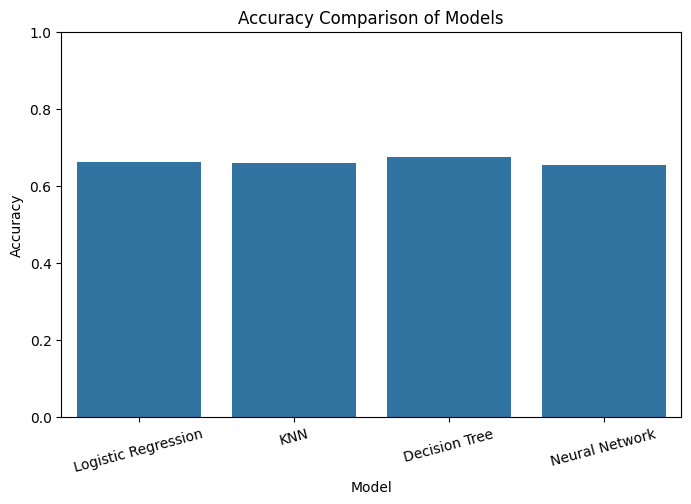
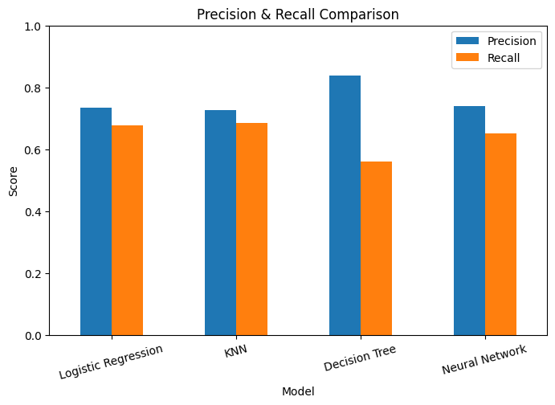
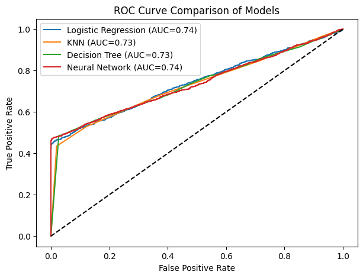
Highest accuracy & precision
Decision Tree: 67.4% accuracy and 0.84 precision. It is very conservative: it predicts class 1 only when it is confident, so recall drops to 0.56.
Best ranking ability
Logistic Regression has the highest ROC-AUC (0.741). It ranks shipments best and is the simplest, most interpretable model.
Balanced trade-off
Neural Network and KNN keep precision and recall close together (≈0.73 / 0.65–0.68), with AUCs of 0.737 and 0.731.
07 Unsupervised Learning: K-Means
K-Means was run on the same scaled feature matrix for k = 1…10. The elbow in the
sum-of-squares curve was used to select k = 2 clusters (n_init=10,
random_state=42).
To visualise the 11-dimensional data, it was projected to two principal components with PCA and coloured by cluster. The clusters show groups of shipments with similar behaviour, independent of the delivery label. This is useful for exploration and segmentation.
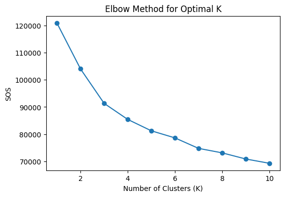
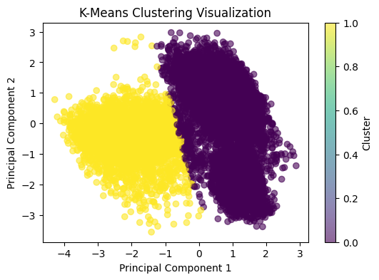
08 Conclusion
- All four supervised models land in a narrow band: 65–67% accuracy and 0.73–0.74 ROC-AUC.
- Because the classes are imbalanced (≈60/40), accuracy alone doesn't separate the models. Precision, recall and AUC tell different stories.
- Discount offered, product weight and customer care calls are the most informative features.
- K-Means with PCA gives a complementary, label-free view of shipment segments.
Possible next steps
- Drop the
IDcolumn (an identifier, not a real shipment attribute) - Use one-hot encoding for nominal categories
- Try ensemble methods (Random Forest, Gradient Boosting, XGBoost)
- Tune hyperparameters with cross-validated grid search
- Handle imbalance with class weights or SMOTE